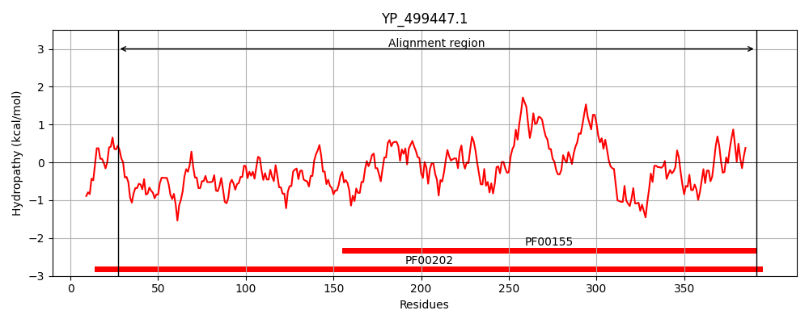
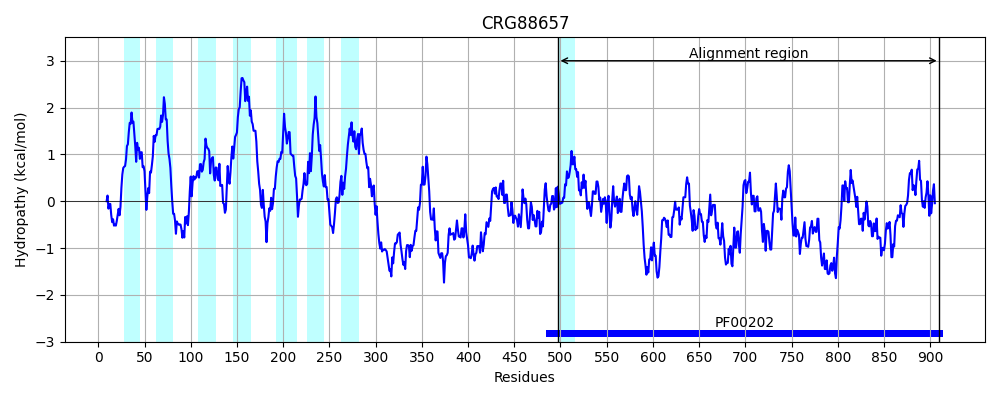
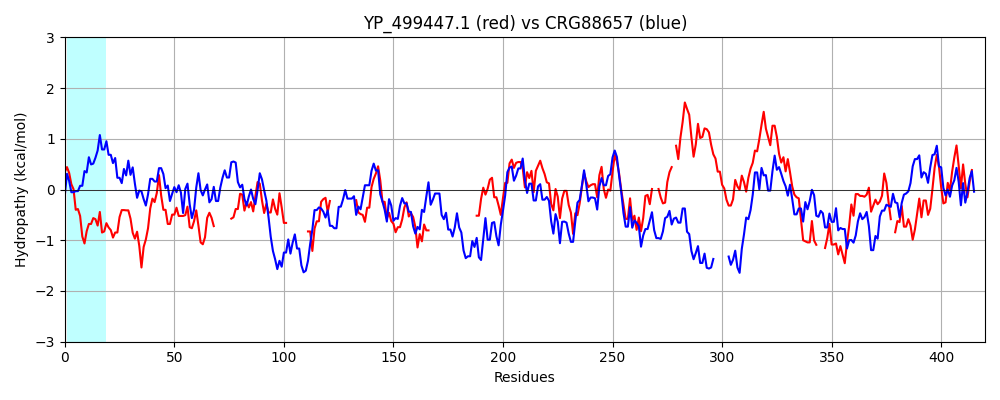

Hit Accession: CRG88657
Hit TCID: 9.B.313.1.2
Hit Description: gnl|BL_ORD_ID|2913 gnl|TC-DB|CRG88657|9.B.313.1.2 4-aminobutyrate aminotransferase / (S)-3-amino-2-methylpropionate transaminase [Talaromyces islandicus]
Mach Len: 420
e:0.000000
Query TMS Count : 0
Hit TMS Count: 8
TMS-Overlap Score: 0.000000
Predicted Substrates:None
BLAST Alignment:
Score: 215 , Bit scores: 87 bits, E-value: 1.5e-18, Alignment length: 420, Percentage identity: 23
Query: 27 SEAEGVWVKDPEGNKYMDMLSAYSAVNQGHRHPKIIQALKDQADKVTLVSRAFHSDNLGEWYEKICKLA-------GKDKALPMNTGAEAVETALKAARRWA---------YDVKGIEPNKA-----------EIIAFNGNFHGRTMAPVSLSSEAEYQRGYGPLLD---------------------GFRKVDFGDVDALKAAINENTAAVLVEPIQGEAGINIPPEGYLKAIRELCDEHNVLFIADEIQAGLGRSGKLFATDWDNVK--PDVYILG-KALGGGVFPISVVLADKEVLDVFTPGSHGSTFGGNPLACAASIAALDVIVDEDLPGRSLELGDYF---KEQLKQIDHPSIKEVRGRGLFIGVELNESAR-PYCEALKEEGLLCKETHDTVIRFAPPLIITKEELDLALEKI 391
S++ G ++ D +GN +D+ + +++ G+ +P + A+ L+ R + + I K G ++ G++A ETA KAA + D + A I++F FHGR +S + + P D K + + + + AAV+VEPIQ E G N + + +R++ +NVLFI DE+Q G+G +GK +A D N++ PD+ KA G + + L + P +T+ G+P A L+ I + L + GDY E L Q +I+ +RG+G + + R + K G+ + + +R P LI K DL LE++
Sbjct: 497 SKSVGNYLVDLDGNVLLDVYAQIASIPVGYNNPHLAAAVNTPEMVRALIDRPALGNFPSADWSNILKTGLLRAAPKGLNQVFTALAGSDANETAYKAAFMYRRQQERGGANVDFSDADTTSAMLNQSPGSPNMSIMSFKSAFHGRLFGSLSTTRSKPIHKLDIPAFDWPQAPFPALKYPLEEHVQENAAEEKRCLAEAERIIKEFHNPVAAVVVEPIQSEGGDNHASPAFFQGLRDITKRNNVLFIVDEVQTGVGATGKFWAHDHWNLQSPPDLVTFSKKAQTAGYYYGNPALRPNK------PYRQFNTWMGDPARAILFRAILEEIESKGLVENTAATGDYLYNGLESLAQKYPQAIQNLRGKGQGTFIAWDSPNRDAFLAKAKSVGVNIGGSGASAVRLRPMLIFQKHHADLLLERL 910 | Protein Hydropathy Plots: |
|---|
|  |  |
Pairwise Alignment-Hydropathy Plot:
|
|---|
|  |